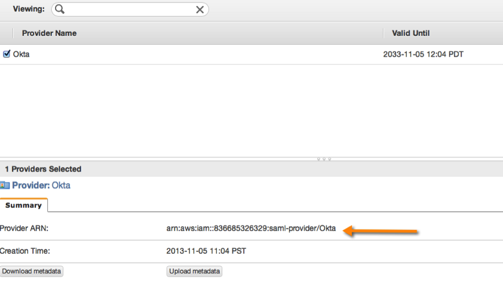
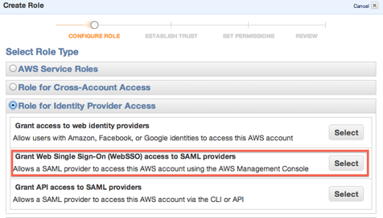
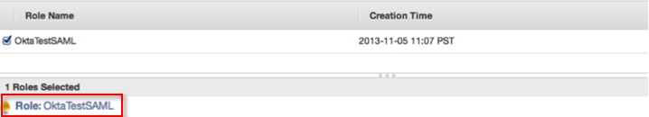

Provide the following IDP metadata when prompted.
Sign into the Okta Admin dashboard to generate this value.
Be sure to copy the Provider ARN when it displays, as shown below.

Select Roles from the list on the left, and then select Create New Role at the top.
Provide a friendly name for your role. For Role Type, select Role For Identity Provider Access, and then select Grant Web Single Sign-On (web SSO) access to SAML provider, as shown below.

Note: If you already have an existing role with the type Grant Web Single Sign-On (web SSO) access to SAML providers, you can modify it to work with the SAML provider you just created in the previous step.
Verify the role trust policy. Choose the access policy, such as permissions, that federated users will inherit when using this role.
Review your settings, and then select Create Role. You should be able to see the new role, as shown below.

Optionally, you can specify the region that your users sign in to. To specify a region, on the Okta Dashboard for the Amazon Web Services application, select the Sign On tab. Enter one of the values shown below in the Default Relay State field. Continue to Step 11.
| Region | Default Relay State |
|---|---|
US East (N. Virginia) |
https://us-east-1.console.aws.amazon.com |
US West (Oregon) |
https://us-west-2.console.aws.amazon.com |
EU (Ireland) |
https://eu-west-1.console.aws.amazon.com |